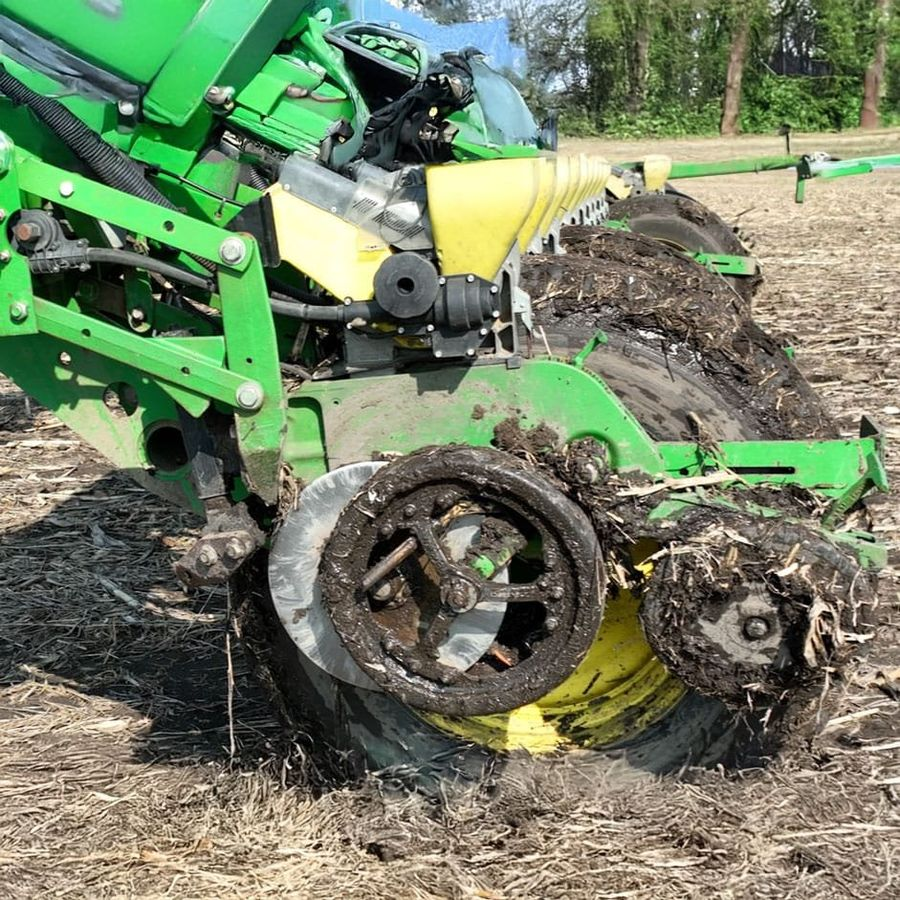
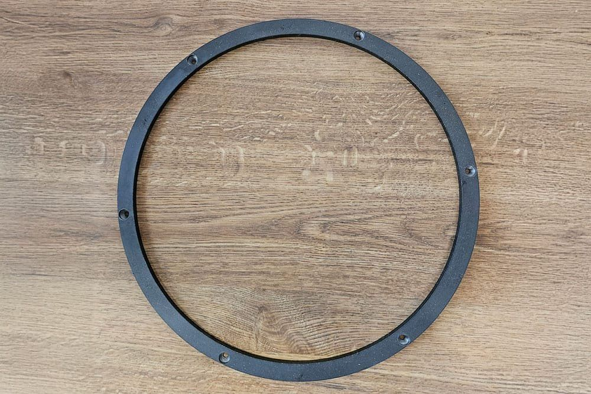
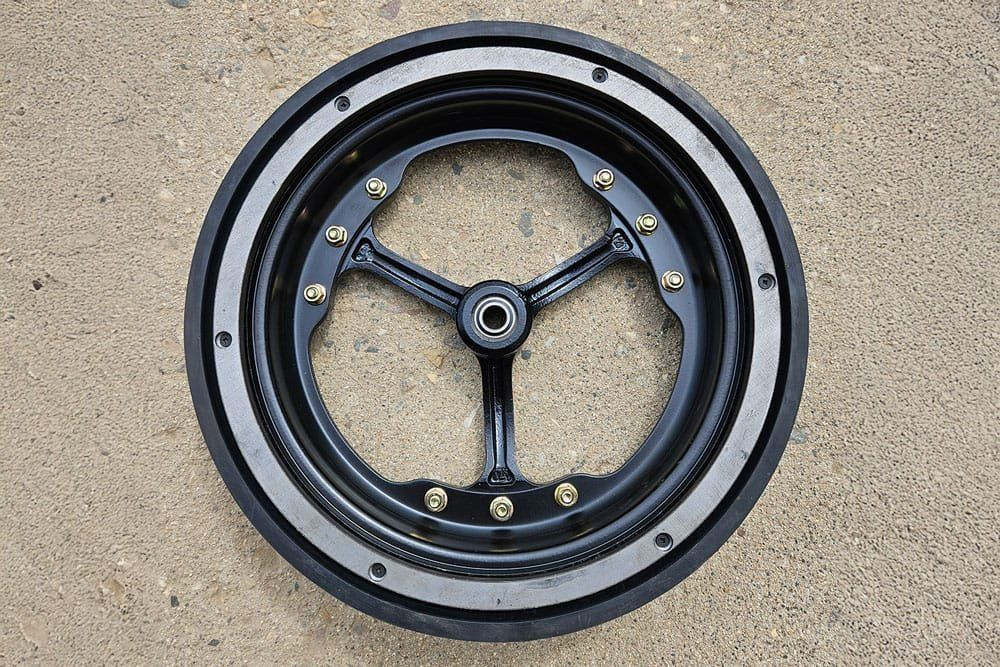
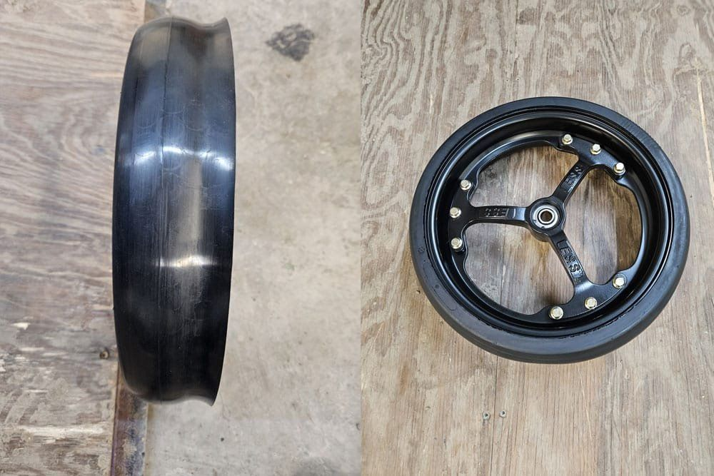
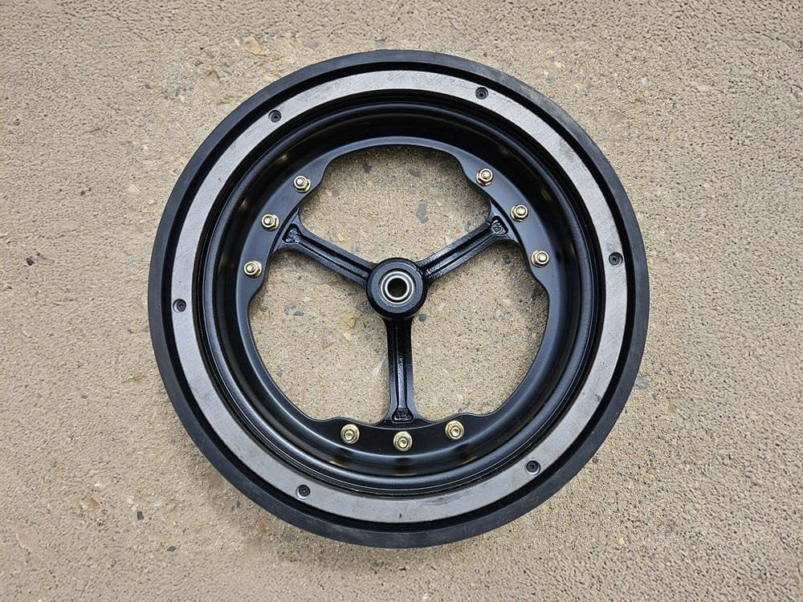
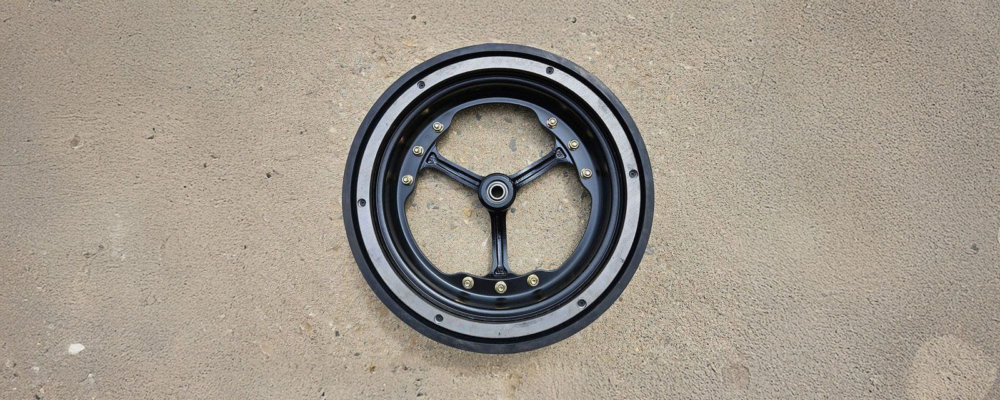

The story
Built in the field, not in an office
I grew up on a farm in South Dakota and have spent more than four decades in agriculture. From 1992 to 2021 I worked as a custom planter, and year after year the same problem stopped the planter: gauge wheels packed with mud and debris.
I had a first working idea within days, then kept refining it until it was simple to use. Before starting my own company I was also the top salesman for a gauge wheel company, and that experience helped me see where the products could be better.
In 2021 I founded Jung Enterprise to make, sell and support the product.

The invention
A steel ring that shields and scrapes
The ring fits a planter's gauge wheel. It shields the tire from mud, debris and wear, and it acts as a scraper, so spoked gauge wheels stop packing with mud. The first version was welded on; after listening to customers I redesigned it to screw on, which makes it faster and easier to fit.
Protects the tire
Shields gauge wheel tires from mud, debris and wear, extending tire life.
Scrapes as it rolls
Keeps spoked gauge wheels from packing with mud, so the planter keeps running.
Screws on
Redesigned from weld-on to screw-on after customer feedback, for faster fitting.




Jung Enterprise also offers a wheel retainer and curved spoked gauge wheels, for planters, air seeders and no-till drills. Visit jungenterprise.net
Find the needs nobody has met, then deliver solutions that are practical and affordable.
Patents
Four U.S. patents
The combined depth gauge wheel and scraper is protected by four United States patents, all naming me as the inventor and Jung Enterprise Inc. as the assignee.
After two and a half years of direct selling and farm shows, the business grew strongly. Thousands of units have now been sold through a range of companies.
- US 11,330,759 B1Combined depth gauge wheel and scraper for a planter. Granted May 17, 2022.
- US 11,528,838 B1Combined depth gauge wheel and scraper for a planter. Granted December 20, 2022.
- US 11,707,013 B2Combined depth gauge wheel and scraper for a planter. Granted July 25, 2023.
- US 11,968,921 B2Combined depth gauge wheel and scraper for a planter. Granted April 30, 2024.
Day to day
Still hands on
My days are spent updating equipment for farmers, working farm shows, answering customer questions and orders, running social media advertising and following the seasons. At planting and harvest I am out helping in person.
Away from work I enjoy yard work, motorcycles, camping, fishing, hunting and running.

Contact
Get in touch
For orders, dealer enquiries and partnerships, send me a message.
Ipswich, South Dakota